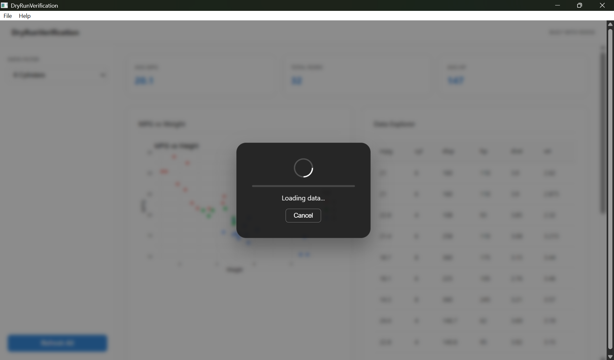

# RDesk async functions work safely in non-interactive mode
RDesk::rdesk_jobs_pending() # returns 0 when no jobs running
#> [1] 0The three tiers of async in RDesk
RDesk provides three levels of async support. Start at Tier 1. Move to Tier 2 or 3 only when you need something Tier 1 cannot do.

RDesk Loading Overlay & Progress Hook
Tier 1 – async() wrapper (recommended)
Wrap any message handler with async(). RDesk handles
everything else.
app$on_message("calculate_total", async(function(payload) {
# This runs in a background worker
result <- sum(payload$values)
list(total = result)
}, loading_message = "Calculating..."))What async() does for you automatically: - Runs your
function in a background worker (non-blocking). - Shows a loading
overlay with a cancel button. - Reloads your packages in the worker
context. - Sends the result back as <type>_result. -
Shows an error toast if something goes wrong.
Tier 2 – rdesk_async() (manual control)
Use rdesk_async() when you need manual control over the
UI state or multiple progress updates:
app$on_message("long_job", function(payload) {
job_id <- rdesk_async(
task = function(x) {
# Perform multiple steps, each reporting progress
for(i in 1:5) {
Sys.sleep(1)
# Note: You can send progress manually or
# rely on the final on_done.
}
x * 2
},
args = list(x = 10),
on_done = function(res) {
# Hide overlay when task finishes
app$send("__loading__", list(active = FALSE))
app$send("job_finished", list(result = res))
}
)
# Show overlay with explicit message and job_id for cancellation
app$send("__loading__", list(
active = TRUE,
message = "Starting long job...",
job_id = job_id,
progress = 10 # Initial progress
))
})Tier 3 – mirai direct (expert use)
Use mirai::mirai() directly when you need: - Custom
daemon counts per task type. - Task chaining or pipelines. - Integration
with other mirai-aware packages.